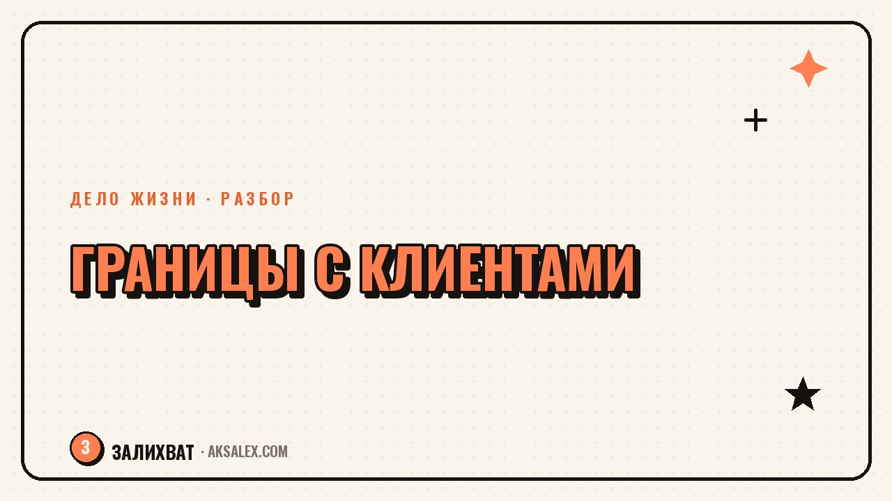

Как выстроить границы с клиентами в своём деле

На старте своего дела любой клиент кажется важным, и легко привыкнуть отвечать на сообщения в любое время, соглашаться на правки сверх договорённого и снижать цену, если человек настаивает. Поначалу это работает - клиенты остаются, сарафанное радио растёт. Но через несколько месяцев накапливается усталость: ты уже не можешь отличить рабочий день от выходного, а новые клиенты приходят с ожиданием такого же безграничного доступа к тебе, как у предыдущих.
Почему границы кажутся угрозой для бизнеса
Страх примерно такой: если я откажу в правке вне договора или не отвечу ночью, клиент уйдёт к конкуренту, который согласится на всё. Этот страх особенно силён на старте, когда клиентов мало и каждый кажется последним шансом удержаться на плаву.
На практике клиенты, которые уходят из-за разумных границ - реакция в рабочие часы, фиксированный объём правок, предоплата - чаще всего были бы проблемными и дальше: требовали бы больше за те же деньги, тянули бы время и энергию сильнее, чем приносили бы дохода. Удержание такого клиента стоит дороже, чем его потеря.
Клиент, который уважает твои границы с первого дня, обычно остаётся надолго. Клиент, который их с первого дня прощупывает на прочность, рано или поздно станет проблемой - вопрос только времени.
Какие границы нужны чаще всего
Границы бывают разных видов, и не все одинаково важны для конкретного дела. Для одних критично время ответа, для других - объём работы по фиксированной цене, для третьих - личная дистанция в общении. Полезно определить свои три-четыре главные границы, а не пытаться формализовать абсолютно всё.
Базовый набор границ для большинства услуг
- Рабочие часы и дни, в которые ты отвечаешь на сообщения
- Количество правок или итераций, включённых в цену
- Формат оплаты - предоплата, этапы, полная сумма до старта работы
- Срок, в который клиент должен дать обратную связь, чтобы проект не зависал бесконечно
- Тон общения - уважительный с обеих сторон, без перехода на личности при недовольстве
Как ввести границы, если ты уже их нарушал
Сложнее всего вводить границы с клиентами, с которыми уже сложилась привычка безграничного доступа. Резкая смена правил посреди работы может восприниматься как конфликт, поэтому лучше вводить новые условия на новом этапе - при продлении договора, новом проекте или с началом нового месяца, а не внутри текущей задачи.
Формулировка важна: не «я больше не буду отвечать по ночам», а «с этого месяца я отвечаю в рабочие часы с десяти до девятнадцати, чтобы быстрее и качественнее закрывать задачи днём». Акцент на выгоде для клиента снижает ощущение, что ты закрываешься от него.
- Выбери момент для введения новой границы - начало проекта, продление, смена тарифа
- Сформулируй правило как улучшение процесса, а не как отказ
- Будь готов один-два раза мягко напомнить о правиле, если клиент по привычке его нарушит
Таблица: типичные ситуации и варианты ответа
Разным ситуациям подходят разные формулировки отказа или ограничения. Общий принцип - называть факт и предлагать альтернативу, а не извиняться за существование правила.
| Ситуация | Слабый ответ | Рабочий ответ |
|---|---|---|
| Сообщение в полночь с просрочкой | Молча отвечаешь сразу | «Отвечу утром в рабочие часы» |
| Правка сверх договора | Делаешь бесплатно, чтобы не ссориться | «Эта правка вне объёма, обсудим доплату» |
| Просьба снизить цену задним числом | Соглашаешься из страха потери клиента | «Цена зафиксирована в договоре на старте» |
| Клиент пропал на неделю, потом требует срочно | Бросаешь всё и делаешь ночью | «Включаю в очередь, срок сдвигается» |
| Грубость или переход на личности | Терпишь, чтобы не потерять заказ | «Продолжим общение в уважительном тоне» |
Когда граница важнее клиента
Есть ситуации, где удержание клиента ценой постоянных нарушений границ наносит делу больше вреда, чем его потеря. Если один клиент регулярно требует особых условий, которые ты не даёшь остальным, это создаёт прецедент и подрывает систему, которую ты строишь для всех.
Отказ от токсичного клиента - это не провал, а решение, которое освобождает время и энергию для тех, кто готов работать в нормальных условиях. Многие замечают, что после расставания с одним требовательным клиентом общий доход почти не падает, а нервов становится заметно меньше.
- Считай не только деньги от клиента, но и время и энергию, которые он забирает сверх оплаты
- Если клиент систематически нарушает одну и ту же границу после напоминаний, вероятно, он не изменится
Частые вопросы
Как сказать клиенту «нет» без риска потерять его?
Называй факт правила спокойно и предлагай альтернативу - срок, доплату или перенос. Большинство клиентов уходит не от самого отказа, а от неуверенной или извиняющейся формулировки, которая создаёт ощущение, что правило можно продавить.
Что делать, если клиент привык, что я отвечаю в любое время?
Вводи новую границу не посреди текущей задачи, а на новом этапе - при продлении или новом проекте. Сформулируй правило как улучшение процесса для самого клиента, а не как внезапный отказ от прежнего уровня доступа.
Стоит ли отказываться от клиента, который постоянно нарушает границы?
Да, если после одного-двух спокойных напоминаний ситуация не меняется. Такой клиент обычно забирает больше времени и энергии, чем приносит денег, и его уход освобождает ресурс для более здоровых отношений с другими клиентами.
Как установить границы, если я только начал своё дело и клиентов мало?
Можно вводить базовые границы с первого клиента - это проще, чем переучивать уже сложившуюся привычку. Главные границы на старте - рабочие часы ответа и чёткий объём работы по договору.
Почему границы с клиентами важны не только для нервов, но и для бизнеса?
Без границ сложно планировать время и предсказывать нагрузку, а значит и брать новых клиентов осознанно, а не хаотично. Границы делают бизнес управляемым и позволяют расти, а не только реагировать на любое входящее требование.
Раз тема оказалась полезной, вот что почитать следующим. Делегировать страшно не потому, что никто не справится, а потому что привык всё делать сам. Разбираем, как начать.
Читать статью →а не вручную